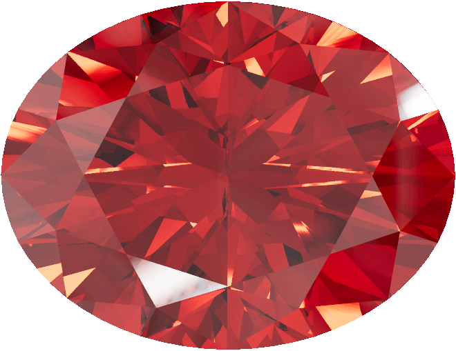
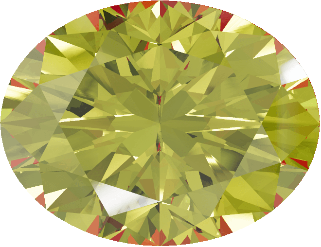
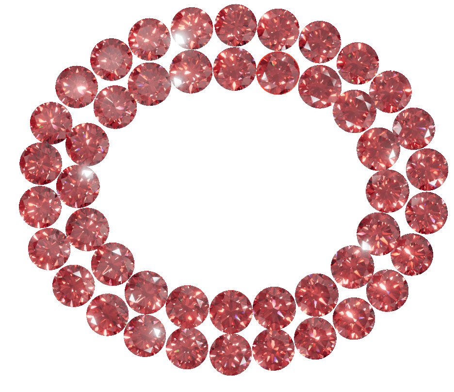
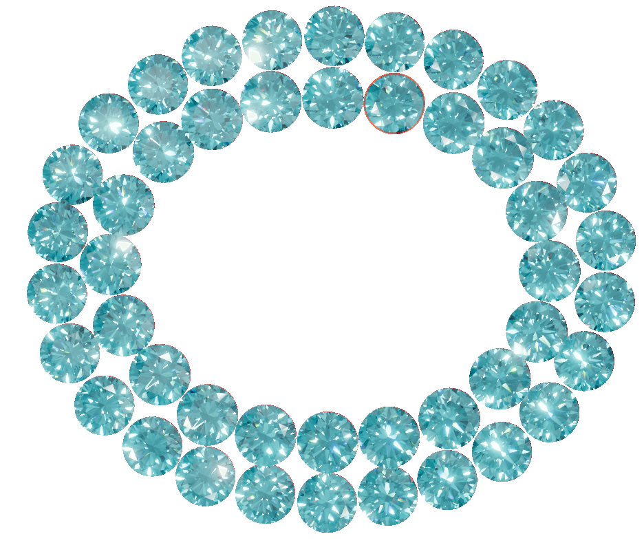
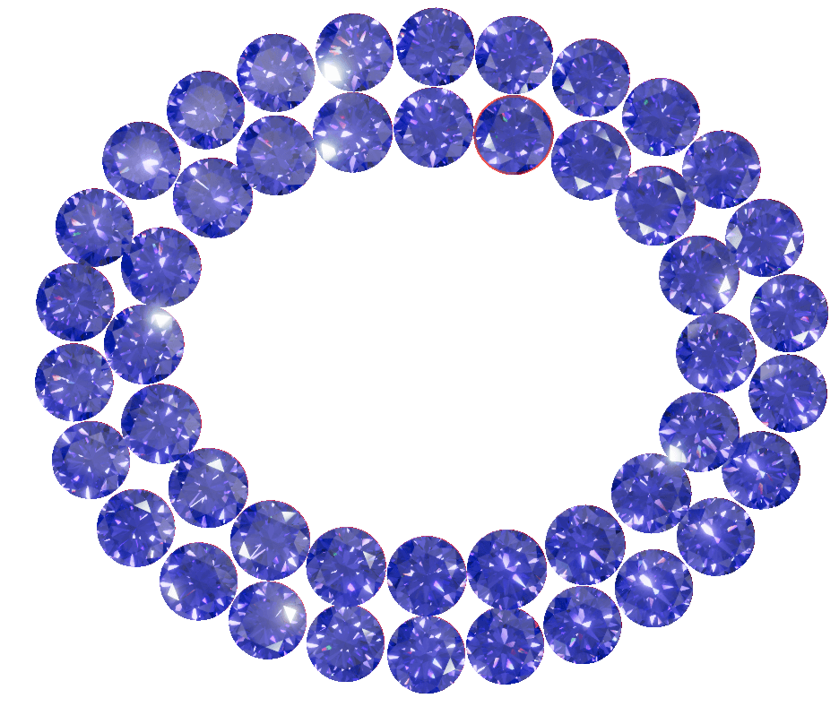
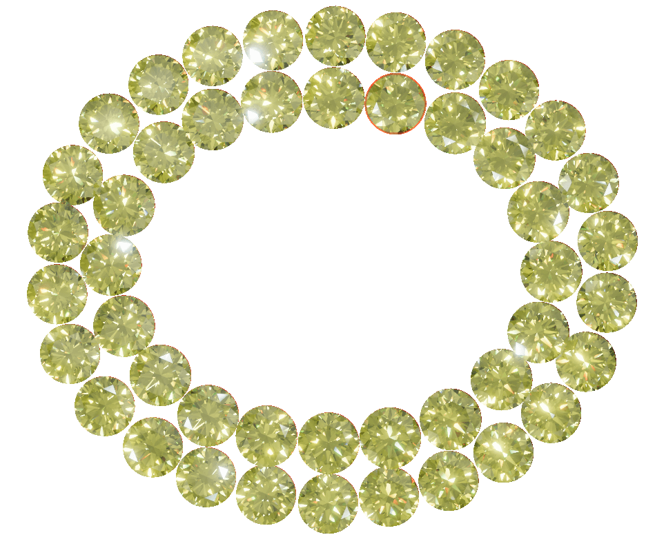
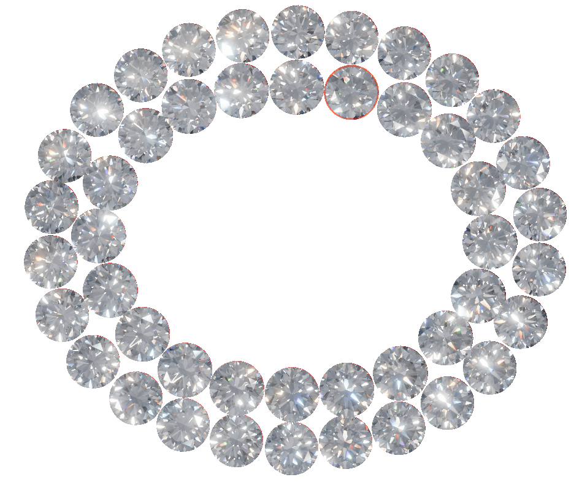
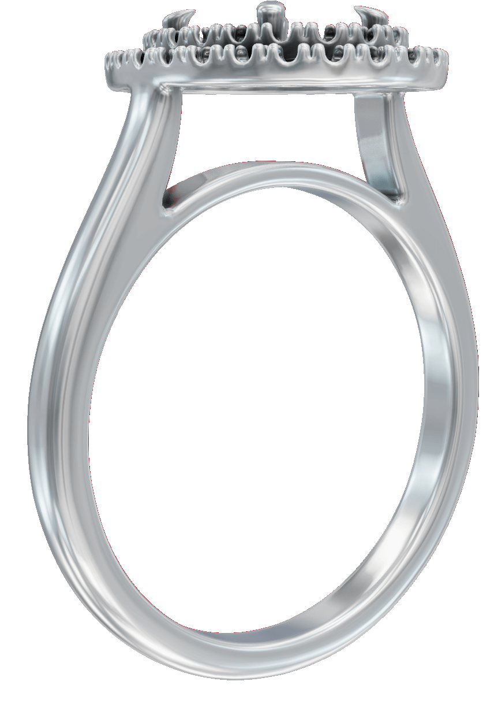
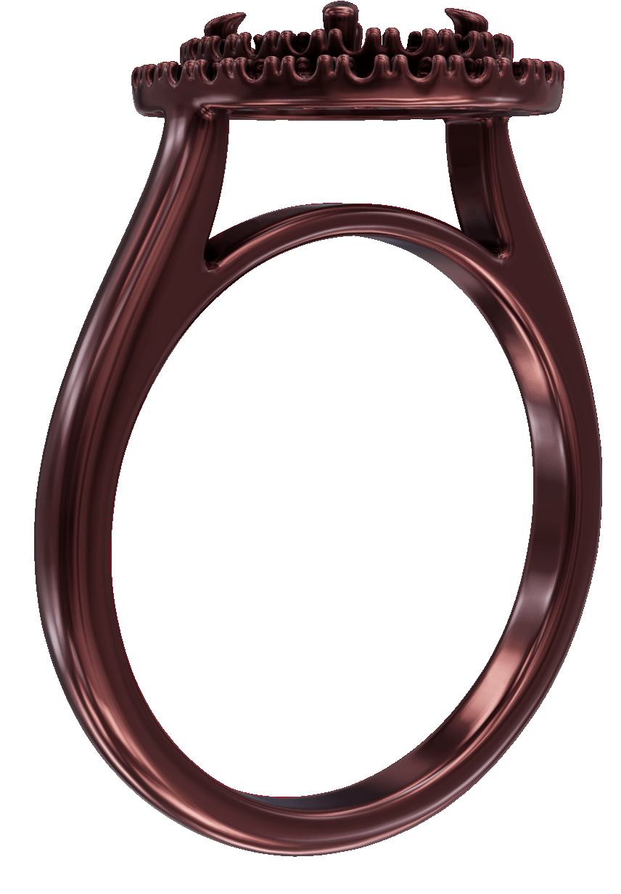

Center Oval
Shank
Ring's Box
Accent









Edit Your Ring
Center Oval
Diamond In Center
Shank
Ring's Shank Material
Ring's Box
Ring's Box Material
Accent
Ring's Accent Material
Oval
Ruby Red
Sapphire Blue
Emerald Green
Rose Pink
Amethyst Purple
Pearl White
Citrine Yellow
Shank
Rich Red
Grey
Rich Beige
Light Yellow
Light Pink
Light Beige
Bright Silver
Ring Box
Outer Space
Chinese Black
Garnet
Apple Red
Sunburst
Light gray
Accent
Red
Cyan
Pure Blue
Yellow
White Pearl
Magenta